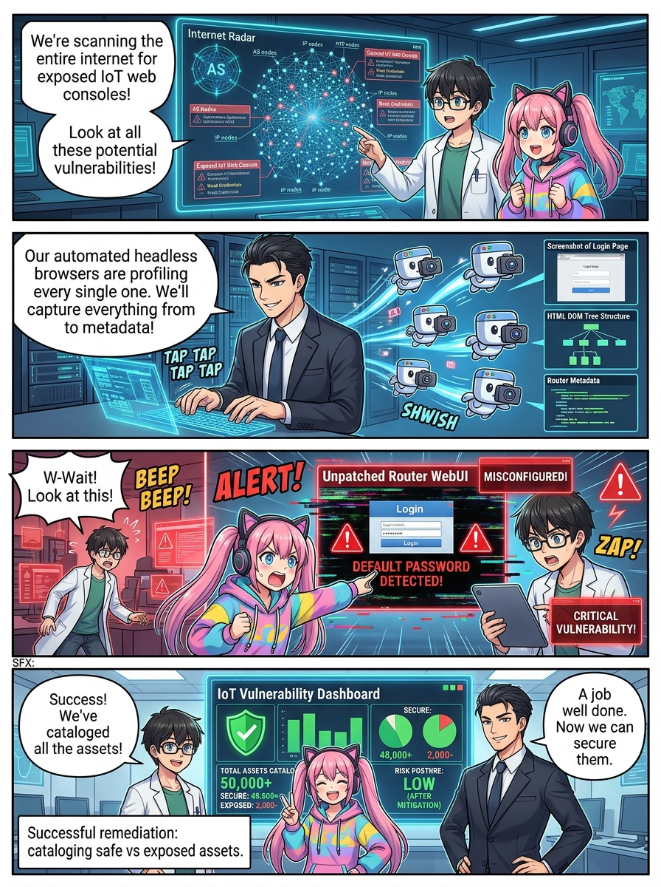
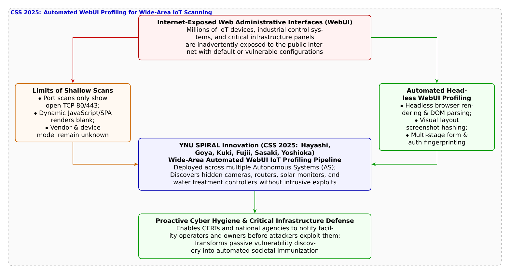

🎨 4コマ漫画挿絵（文字なし）
AI高解像度生成
▲ 【挿絵】青葉台高校 情報科学部＆帝都科学大学サイバーディフェンス・ラボでの実践シーン
💬 4コマ漫画キャラクターセリフ (Story Dialogue Script)
日・英バイリンガル (JA / EN)[葵]「管理画面が見えてるのに、どこの誰の機器か分からないの！？」
[Aoi] "Even with exposed admin panels, we can't tell what device it actually is!?"
[悠真]「まさにそれが横浜国大SPIRALのCSS 2025研究だ！ 複数ASの広域空間でIoT機器を完全自動同定する手法だよ」
[Yuma] "That's exactly YNU SPIRAL's CSS 2025 paper! Automated IoT device profiling across multiple Autonomous Systems!"
[葵]「悪者に乗っ取られる前に、管理者へ『画面が外から丸見えですよ！』ってお知らせできるね！」
[Aoi] "We can alert facility admins that their panels are wide open before hackers hijack them!"
[悠真]「社会インフラを守る第一歩は、自分たちの姿を正しく知ることから始まるんだ」
[Yuma] "Protecting societal infrastructure begins by seeing our true reflection clearly."
📖 小説本文
初冬の青空が広がる放課後、青葉台高校の情報科学部室。大型スクリーンには、日本全国の自律システム（AS: Autonomous System）に割り当てられたIPアドレス空間を可視化したヒートマップが揺らめいていた。
「……ポート80番、および443番。いわゆるWebサーバー用のポートが開いているホストは、一つのプロバイダ内だけでも数十万件に上ります」
白石結衣がキーボードを叩き、集計データを更新する。
「うわあ……！ 世界中がWebサイトだらけだね。でも蓮くん、この開いているポートの中身って、普通のホームページとどう違うの？」
橘葵が温かいほうじ茶の湯気を眺めながら尋ねた。
「葵先輩、実はこの開いているポートの多くは、企業や個人のWebサイトじゃありません。家庭用ルーター、Wi-Fiアクセスポイント、監視カメラ、さらには太陽光発電所の監視パネルや工場の空調制御装置といった**『IoT機器のWeb管理画面（WebUI）』**が、設定ミスや初期値のままインターネットへ直接露出してしまっているんです」
神崎蓮が渋い表情でノートPCの画面を見せた。
「しかも厄介なのは、昔の機器なら単純なHTTP GETリクエストで返ってくるHTMLテキストを見れば『〇〇社製ルーター』と簡単に判別できたんですが、最近のIoT機器はReactやVueなどで作られた動的なシングルページアプリケーション（SPA）が増えていることです。単純なクローラーでアクセスしても、JavaScriptが実行される前の『真っ白なローディング画面』しか返ってこず、どんなメーカーの何という機器なのか全く特定できないんです」
「中身が分からないと、もしその機器に重大なゼロデイ脆弱性が見つかったとしても、どこに危険な機器があるのか国や管理者に警告することすらできないわね……」葵が心配そうに呟く。
「そこで、この課題を根本から解決したのが、僕たちの研究室――横浜国立大学SPIRALの**林嘉乃氏、合屋琴江氏、九鬼琉氏、藤井翔太氏、佐々木貴之准教授、吉岡克成教授ら**が情報処理学会CSS 2025で発表した**『WebUIを対象とした広域スキャンにおけるIoT機器プロファイリングの自動化』**なんだ」
大学のゼミを終えて部室に現れた城崎悠真が、頼もしい声でホワイトボードの前に立った。
「研究チームは、人間がブラウザを開くのと同じようにJavaScriptを実行・描画できる『ヘッドレスブラウザ』をクラスター化し、広域スキャンと統合した自動プロファイリングパイプラインを構築したんだ。アクセスしたWebUIの完全なDOM構造ツリー、フォームの入力項目、タイトルタグ、ファビコンの画像ハッシュ値、そして画面全体のビジュアルレイアウト特徴量を数秒で自動抽出する」
「画面の見え方まで特徴量にするんですか！？」蓮が身を乗り出した。
「そうだ。攻撃的なエクスプロイト（侵入コード）を一切送り込まず、単にブラウザでトップページを表示させるだけの『完全に安全・非侵襲な通信』だけで、その機器がルーターなのか、ネットワークカメラなのか、あるいは水道局や変電所の産業用コントローラーなのかを高精度に特定できるんだよ」
結衣が論文の実証結果をプロジェクターに映し出した。
「国内の複数ASにまたがる広大なIPアドレス空間への大規模適用実験において、これまで未知だった数万台のIoT機器の正確な機種名・ファームウェア世代が自動プロファイリングされ、中には外部公開を想定していない重要インフラの監視パネルも発見・特定されました」
「すごい……！ 攻撃者が悪用する前に、サイバー安全保障の担当者やプロバイダが『お宅の管理画面がパスワードなしで世界中に公開されてしまっていますよ！』とピンポイントで安全指導できるんだね！」葵が瞳を輝かせる。
「その通りだ。インターネットという広大な夜の海で、どこに無防備な灯台や小舟があるのかを正確に測量する技術――これこそが、現代の国家安全保障で最も重視されている**『アタックサーフェス管理（ASM: Attack Surface Management）』**の最前線なんだよ」
悠真が力強く頷く。モニター上では、自動化された知性の眼が、見えざるデジタルの街並みを一つひとつ丁寧に優しく照らし出していた。
---
📊 セキュリティ構造図解 (TikZ LuaLaTeX生成)
国家安全基準・工学図解
▲ 【技術構造図】IPAデジタルスキル標準・国際規格に準拠した仕組みのモデル化